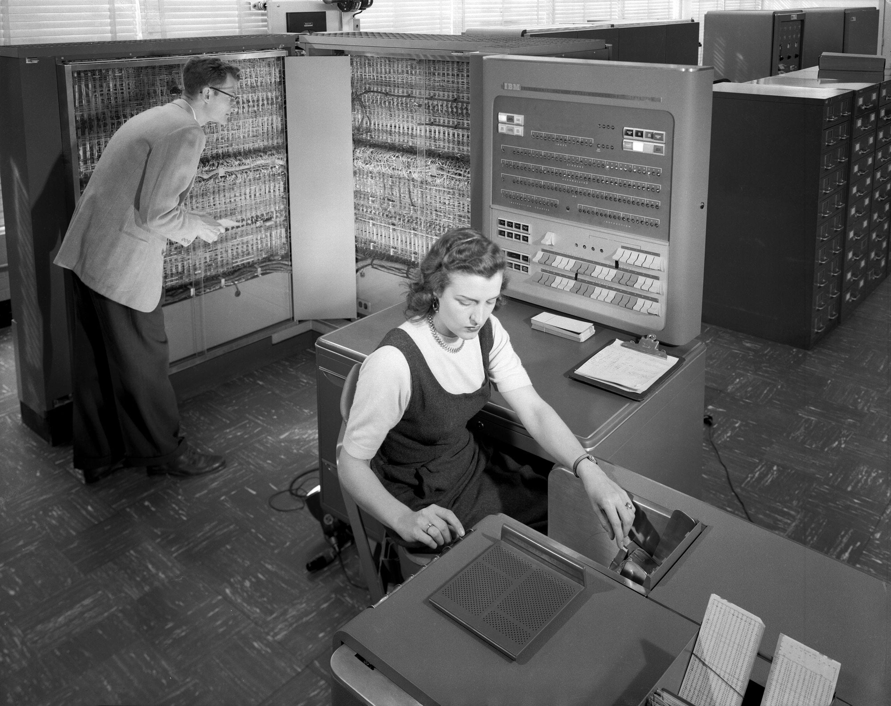
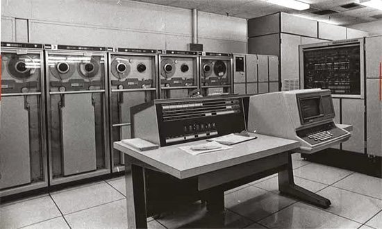

Primeros sistemas operativos utilizados en computadoras
GM-NAA I/O
GM-NAA I/O (General Motors - North American Aviation Input/Output) fue un sistema de entrada/salida desarrollada conjuntamente por General Motors y North American Aviation. Este sistema fue utilizado en computadoras y sistemas informáticos durante la década de 1960.
En la década de 1950, General Motors (GM) comenzó a explorar el uso de computadoras para aplicaciones industriales y comerciales. North American Aviation (NAA), una empresa aeroespacial que luego se fusionaría con Rockwell-Standard Corporation para formar North American Rockwell y posteriormente Rockwell International, tenía experiencia en sistemas informáticos para aplicaciones aeroespaciales. Ambas empresas se unieron para desarrollar el sistema GM-NAA I/O.
GM-NAA I/O fue diseñado para proporcionar capacidades de entrada/salida confiables y eficientes para computadoras de la época. Aunque no hay un año exacto de inicio, se sabe que el sistema estuvo activo principalmente durante la década de 1960.
El sistema GM-NAA I/O permitió a las computadoras comunicarse con dispositivos periféricos, como unidades de cinta magnética, impresoras y terminales de usuario. Proporcionó una interfaz estándar para estos dispositivos, lo que facilitó la conexión y el intercambio de datos entre la computadora y los periféricos.
El sistema GM-NAA I/O fue creado en colaboración entre ingenieros de General Motors y North American Aviation. Su desarrollo fue parte de los esfuerzos de ambas empresas para avanzar en la informática y la automatización en sus respectivos campos de aplicación.
Aunque GM-NAA I/O fue relevante en su tiempo, con el avance de la tecnología informática, este sistema eventualmente fue reemplazado por tecnologías más avanzadas y estándares de interfaz de entrada/salida, como los que se encuentran en los sistemas informáticos modernos.
Imagen de referencia

Video para reforzar contenido
UNIVAC I
La UNIVAC I fue la primera computadora comercial fabricada en Estados Unidos, entregada en marzo de 1951 al censo. Diseñada por J. Presper Eckert y John William Mauchly, creadores de la ENIAC, la máquina se convirtió en un hito tecnológico. Pese a ser precedida por la británica Ferranti Mark 1 y la alemana Z4, se destacó por su enfoque en aplicaciones administrativas y comerciales. Con 7.250 kg y 5.000 tubos de vacío, procesaba dígitos en serie a una velocidad de 100.000 sumas de dos números de diez dígitos por segundo. Equipada con memorias de mercurio y un reloj interno de 2,25 MHz, fue utilizada para predecir la elección presidencial de 1952 con éxito.
La UNIVAC I se vendió principalmente al gobierno estadounidense y empresas privadas como General Electric y DuPont, aunque su elevado costo la hizo inaccesible para muchas universidades. A pesar de esto, algunas unidades se donaron a instituciones como Harvard, Pensilvania y Case Western Reserve University. Aunque se fabricaron y entregaron 46 unidades en total, algunas permanecieron en servicio hasta la década de 1970, superando su obsolescencia.
Imagen de referencia

Video para reforzar contenido
IBM 7090
IBM 7090 fue una computadora de propósito general de la serie IBM 700/7000, lanzada por IBM en 1959. Fue una de las computadoras más poderosas de su época y se convirtió en una parte integral del paisaje informático de la década de 1960.
El desarrollo del IBM 7090 comenzó en 1956 como una mejora del IBM 709, que a su vez era una evolución del exitoso IBM 704. El 7090 fue diseñado para ser más rápido y potente que su predecesor, utilizando tecnología de transistores en lugar de tubos de vacío para aumentar su velocidad y confiabilidad. Fue lanzado oficialmente en noviembre de 1959.
Estaba basado en la arquitectura de computadora de 36 bits y operaba a velocidades de hasta 100.000 operaciones por segundo. Tenía una capacidad de memoria principal de hasta 32.768 palabras de 36 bits (aproximadamente 98 kilobytes) y podía expandirse con unidades adicionales de memoria. Ofrecía capacidades avanzadas para su época, incluida la aritmética de coma flotante y la capacidad de manejar datos en formato de punto flotante.
Fue ampliamente utilizado en aplicaciones científicas, de ingeniería y comerciales. Fue utilizado en la industria aeroespacial, en la investigación académica, en el diseño de sistemas de defensa y en aplicaciones de análisis financiero, entre otros campos. Su alta velocidad y potencia lo convirtieron en una herramienta invaluable para el procesamiento de grandes volúmenes de datos y cálculos complejos.
Marcó un hito en la evolución de las computadoras de la época. Su éxito allanó el camino para futuras generaciones de mainframes y computadoras de gran escala. Además, estableció a IBM como uno de los líderes en la industria informática, consolidando su posición como proveedor de soluciones tecnológicas para empresas y organizaciones en todo el mundo.